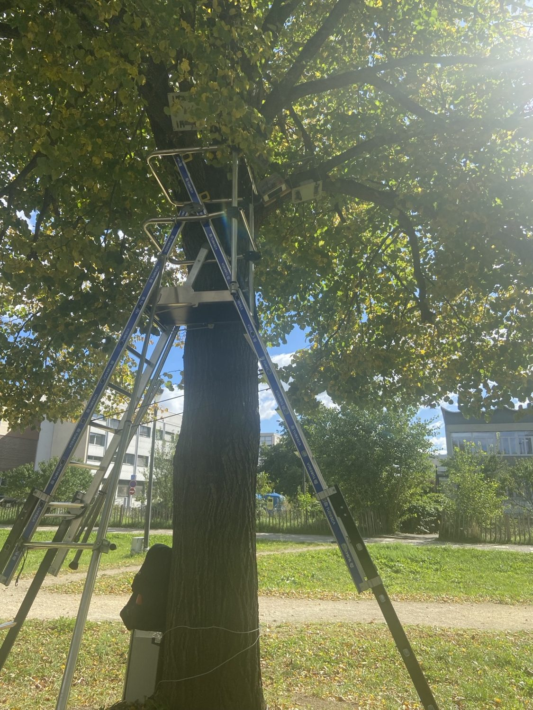

Autonomous Sap-Flow Measurement System
Fourth-year engineering internship | Laboratoire Ampère, in collaboration with CETHIL | 2025–2026
Context and objective
This research instrument measures temperature changes around a controlled heat pulse to support sap-flow studies in trees. The prototype combines an analog sensing board, digital control board and autonomous measurement cycle. The internship focused on improving firmware reliability, data acquisition, low-power operation and field readiness of an existing research project, not developing the complete instrument from scratch.
My contributions
- Reorganized and substantially redeveloped the application-level PIC24 embedded firmware, building on existing low-level peripheral components and earlier prototypes.
- Integrated a repeatable sequence of acquisition, heating, buffered data logging to microSD, RTC-driven sleep and wake-up.
- Developed a BLE mobile interface using MIT App Inventor for device startup, clock synchronization, live lab diagnostics and concise field checks.
- Investigated interference between microSD and AD7799 ADC operations on the shared SPI bus; introduced separate configurations for acquisition and SD operations, with the solution proposed during technical supervision.
- Fixed heating-timing variability by using a dedicated timer; investigated battery measurement and power-regulator issues.
- Iterated a prototype enclosure in FreeCAD and participated in lab calibration and field validation.
Technical architecture
- MCU: Microchip PIC24FJ1024GB606
- Acquisition: 6 thermistors with 2 × AD7799 ADCs
- Storage: microSD / FatFs; timekeeping: RV-3032 RTC
- Connectivity: RN4871 BLE; mobile interface via MIT App Inventor
- Tools: MPLAB X, MCC, C, FreeCAD
Outcomes and limitations
- A stable complete measurement cycle was demonstrated in controlled testing.
- A field test on one tree showed a usable thermal response and approximately 0.001 °C observed noise under the tested conditions.
- Approximately 17 mA active and 8.5 µA during sleep were reported for tested configurations; values depend on setup and hardware.
- Long-duration, multi-site field performance was not fully validated within the internship. The project remained an evolving research prototype.
Team and acknowledgements
Research laboratories: Laboratoire Ampère and CETHIL.
Industrial/research supervisors: Laurent Morel (Ampère), Frédéric Lefèvre (CETHIL).
Academic tutor: Fabien Mieyeville (Polytech Lyon).
Research support: Ilane Cherif.
Previous contributors acknowledged in the internship report: Kevin Maillot and Youssouf Fofana.
Sources and publication
Source: Développement d’une carte d’acquisition et de contrôle d’un capteur de flux de sève, fourth-year internship report, January 2026. The report references internal predecessor reports and component manufacturer datasheets (Microchip, Analog Devices, Micro Crystal). This portfolio description is a summary of that report. No internal source code, schematics, datasets or full report are published here. Only personally taken tree-installation photographs may be considered for the public site after final image review.

Photo of field setup supplied by the project author.
Professional project summary. Authors, collaborators and institutions are credited in the text. Code and third-party assets remain with their owners.